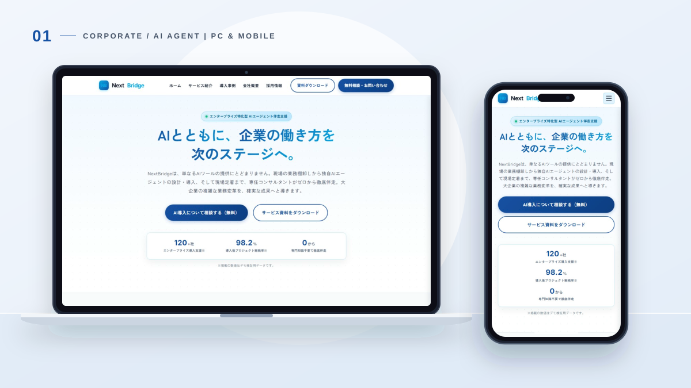
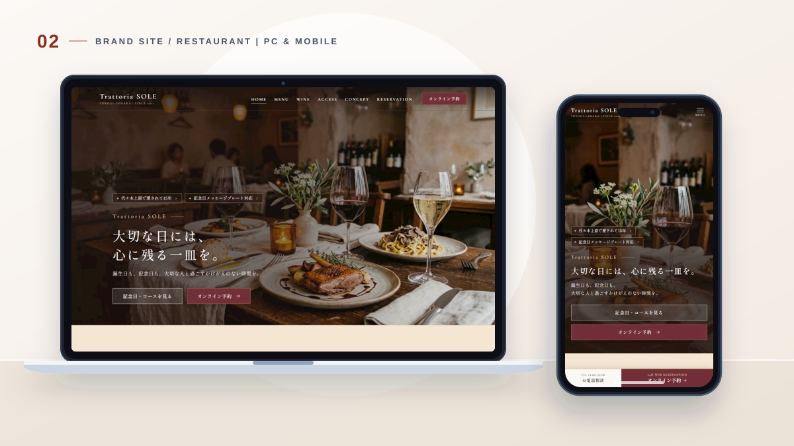
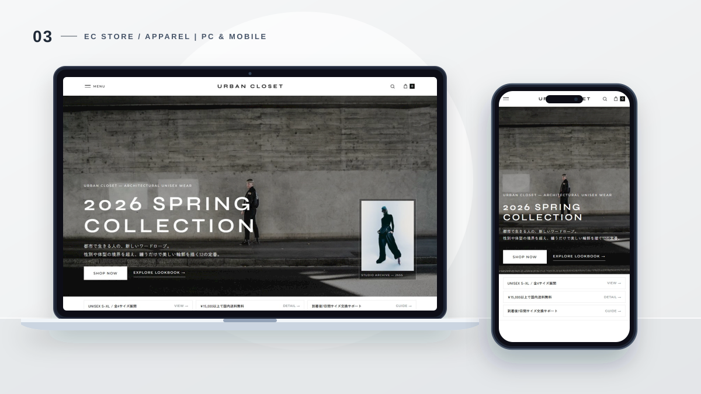
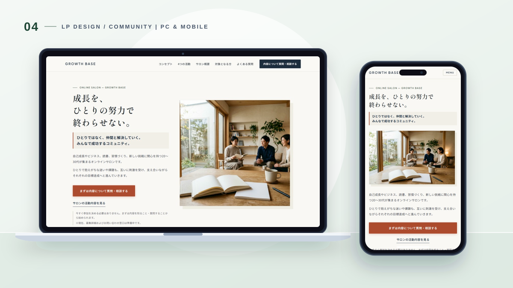
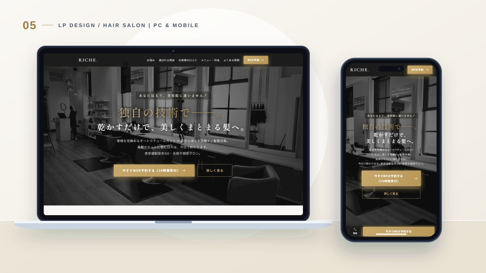
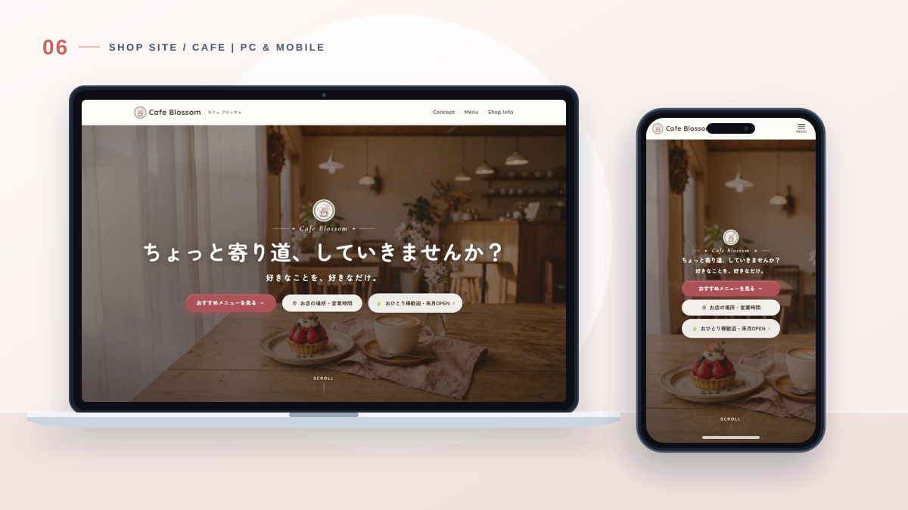

WEB DESIGN & PARTNER — YUYA HIBINO
どこよりも寄り添い、作ってからも丁寧に。
Yuya Hibino
「どんなサイトにしたいか」をじっくりお聞きし、
パソコンでもスマホでも迷わず伝わる「見やすいページ」をお作りします。
どこよりも寄り添い、作ってからも丁寧に。
「どんなサイトにしたいか」をじっくりお聞きし、
パソコンでもスマホでも迷わず伝わる「見やすいページ」をお作りします。
パソコンでもスマホでも見やすいデザインを心がけています。
各カードをクリックすると、実際の制作サイトをご覧いただけます。

CORPORATE SITE , UI/UX DESIGN
エンタープライズ向け伴走型AIエージェント自動化支援（全5ページ構成）

BRAND SITE , WEB DESIGN
代々木上原で15年続くイタリアンレストラン｜大切な日には、心に残る一皿を。

EC SITE , ART DIRECTION
都市で生きる人の、新しいワードローブ。ユニセックスアパレル公式ECストア

LP DESIGN , COPYWRITING
「成長を、ひとりの努力で終わらせない。」20〜30代向け実践型オンラインサロン

LP DESIGN , BRANDING
乾かすだけでまとまる骨格補正カット＆深層ナノ髪質改善（表参道・全席半個室）

SHOP SITE , WEB DESIGN
「日常の中に、小さな花が咲くようなひとときを。」すずらん通り商店街のカフェ
はじめまして、日比野です。
現在19歳で、お店や会社の魅力を届けるホームページ・Webサイトの制作をしています。
私が何よりも一番大切にしているのは、
「どんなサイトにしたいか」「お客さまにどんな想いを届けたいか」を、
どこよりも親身に寄り添ってお聞きすることです。
「パソコンやネットのことは全然わからない」
「まだどんなページにしたいか、はっきり決まっていない」
そんな状態でも、どうか安心してください。
一つひとつお話をじっくり伺いながら、見る人にとって一番見やすく、
魅力がまっすぐ伝わる形を一緒に作っていきます。
そしてもう一つ、強くお約束できることがあります。
それは、「作ってからのサポートも、どこよりも丁寧にやり抜くこと」です。
ページは完成して終わりではありません。
「文字や写真を少し変えたい」「使い方がわからない」「もっとこうしたい」といった
公開後のご相談にも、誰よりも素早く、丁寧にとことん寄り添い続けます。
19歳ならではのフットワークの軽さと、誰にも負けない誠実さで、
一つひとつのご依頼に全力で向き合います。
「まずは一度、日比野に任せてみよう」と思っていただけるよう、
最初から最後まで心を込めてサポートいたします。どうぞ気軽にお声がけください。
難しい言葉は一切使いません
専門用語は使わず、わかりやすい言葉でお話しします。「こんな雰囲気にしたい」という想いを、どこよりも親身にじっくりお聞きします。
スマホでもパソコンでも迷わない
ごちゃごちゃした飾りではなく、訪れた人が迷わず読めて、お店や会社の一番の魅力がすっと伝わる「見やすいページ」を丁寧にお作りします。
公開した後のサポートも安心
納品して終わりではありません。作った後のちょっとした修正や更新、わからないことの相談も、どこよりも丁寧・迅速にサポートし続けます。
はじめての方でも安心して進められるよう、一つひとつ丁寧にご案内します。
お問い合わせフォームからお気軽にご連絡ください。「まだ何も決まっていない」という段階でも大丈夫です。
どんなサイトにしたいか、誰に何を届けたいかをじっくりお聞きします。オンラインでも対応できます。
お聞きした内容をもとに、ページの構成と費用・期間の目安をわかりやすくお伝えします。
ご納得いただけたら制作スタート。途中経過もこまめに共有するので、イメージと違う心配はありません。
完成したページをパソコンとスマホで見ていただき、気になるところを一緒に整えます。
いよいよ公開です。公開後の文字や写真の変更、使い方のご質問にもずっと丁寧に対応します。